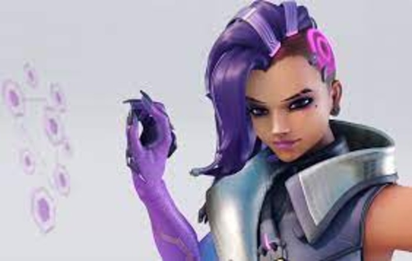

Sombra weapons and abilities
Sombra's main abilty is her hack which can disable an enemies abilities temporarly.
Sombra counters and matchups
Easy matchups fro Sombra
- Tracer: Tracer relies on her abilities which makes her vulnerable to sombra after a hack or emp blast.
- Wrecking ball: same as Tracer Wrecking ball is extremly reliant on his mobility which comes from his abilities.
- Bastion: When he is not in his turret form, Bastion can easily be solo killed by using a hack and spraying at him from a close distance.
Sombra's counters
- Symmetra: her eyes can obliterate your chances of finding a kill against an enemey.
- Reaper: Sombra relies on her submachine gun which can only be used close ranged, exactly where reaper specilizes in.
For more information about synergies and matchups visit these sites.